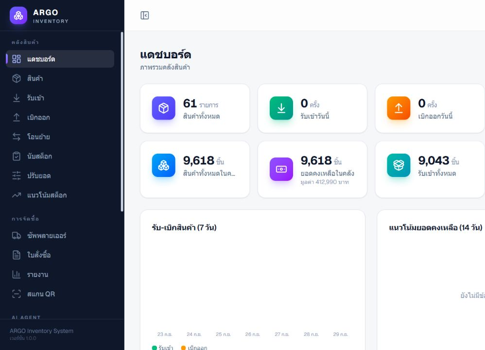
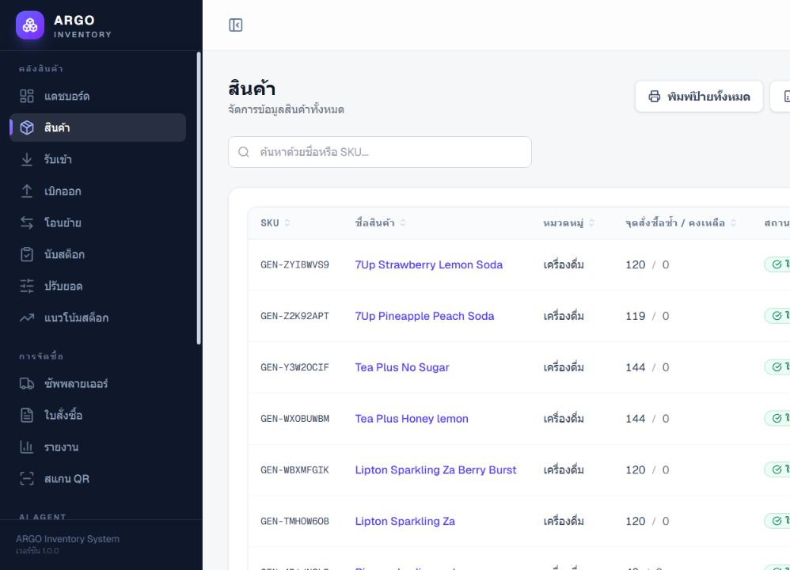
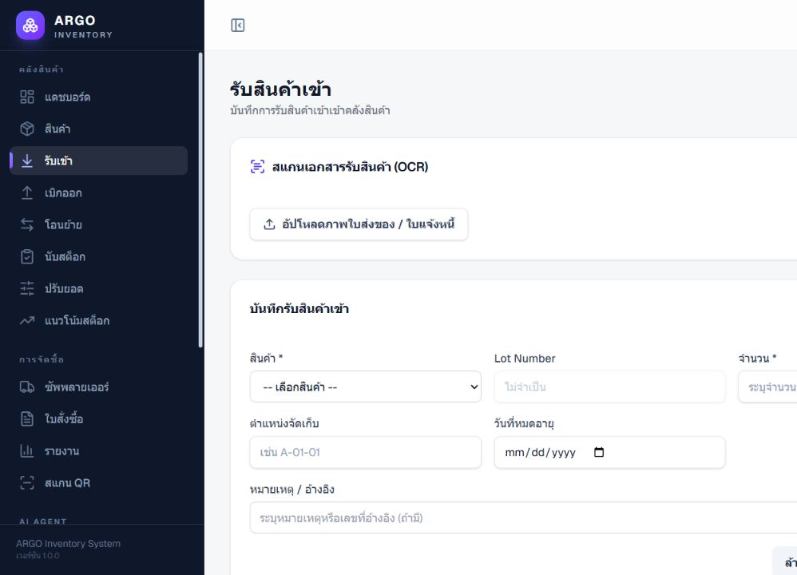
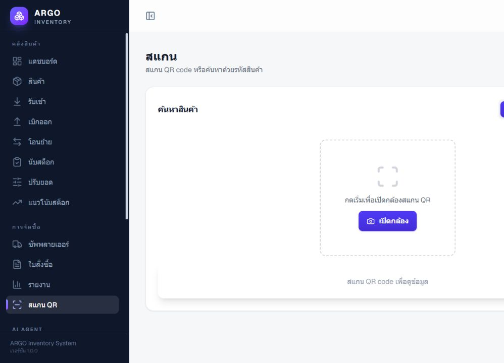
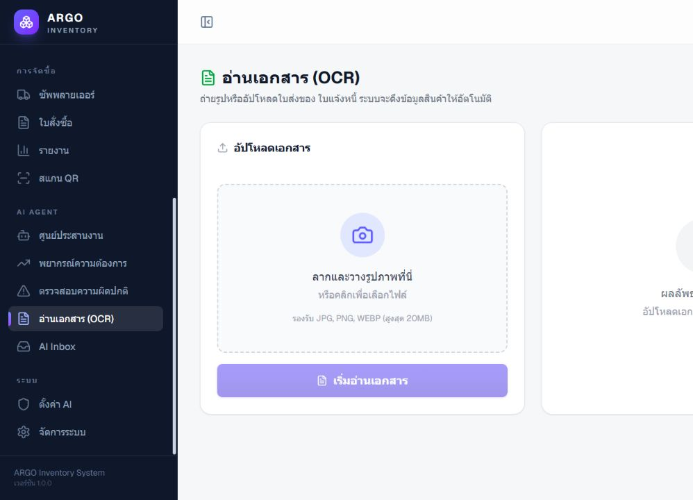

PROJECT CASE STUDY / ARGO INVENTORY
SCREEN 01 / ARGO INVENTORY
SCREEN 02 / ARGO INVENTORY
SCREEN 03 / ARGO INVENTORY
SCREEN 04 / ARGO INVENTORY
SCREEN 05 / ARGO INVENTORY
ตัวอย่างระบบ ARGO Inventory
ชมหน้าจอการทำงานภายในระบบบริหารคลังสินค้า ตั้งแต่ภาพรวมสต็อก การจัดการสินค้า การรับเข้า ไปจนถึงการสแกน QR และการอ่านเอกสารด้วย OCR

แดชบอร์ด
ภาพรวมสินค้า ยอดคงเหลือ และความเคลื่อนไหวของคลังสินค้า

จัดการสินค้า
ค้นหาและตรวจสอบรายการสินค้า หมวดหมู่ และสถานะในระบบ

รับสินค้าเข้า
บันทึกการรับเข้า กำหนดล็อต ตำแหน่งจัดเก็บ และข้อมูลอ้างอิง

สแกน QR
ค้นหาสินค้าหรือสแกน QR เพื่อเข้าถึงข้อมูลได้รวดเร็ว

อ่านเอกสารด้วย OCR
อัปโหลดเอกสารเพื่อช่วยดึงข้อมูลสำหรับขั้นตอนการทำงาน